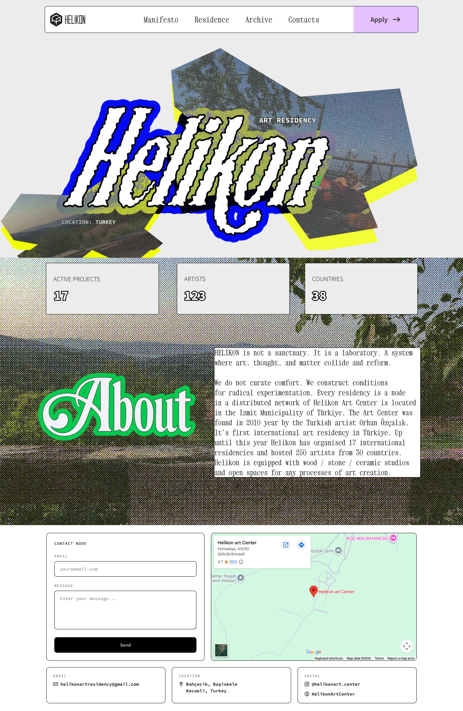
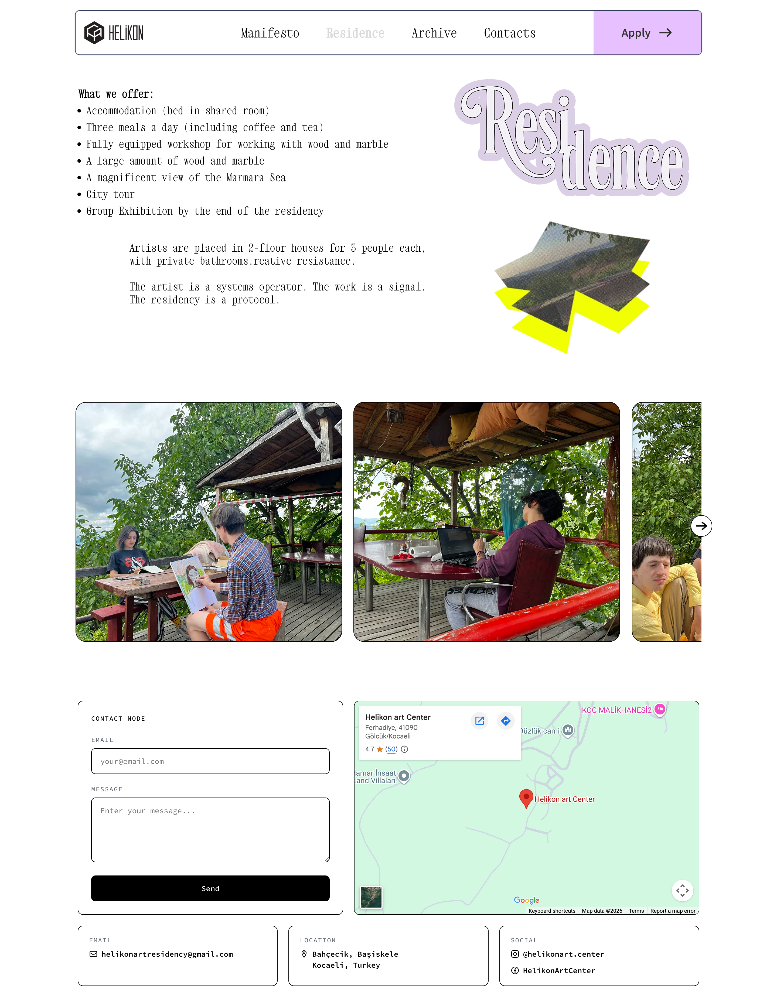

Helikon
Art Center
A website for an artist-run residency on the Aegean coast — shaped around manifesto, archive, and open calls.

Helikon is artist-run and the site needed to reflect that — not a corporate platform, not a generic residency template. It had to carry a manifesto, practical info, an archive, and an application flow without flattening the character of the space.
Typography system, visual identity, and full site design for a residency platform that needed to feel open and self-possessed rather than institutional — carrying several distinct content types at once.
Designed as a single continuous system. The type scale, proportions, and pacing shift across sections — but the logic stays consistent. It reads as one thing even when the content shifts significantly.
Every page has its own voice.
Helikon's visual identity doesn't commit to a single display typeface — each section gets its own decorative heading treatment. The homepage carries a heavy blackletter with neon outlines. The manifesto switches to an ornate script. Residency pages use a dimensional layered serif. The archive gets a ghost outlined type.
The logic is curatorial, not systematic. The variety communicates that Helikon is a place where different voices and materials coexist — not a brand, but a living space where each section owns its own character.
Xanh Mono carries all display and navigation type — its geometric monospaced forms give the site a technical, precise edge. Menlo handles running text, captions, and data, adding a familiar code-adjacent warmth below the headline layer.
Nn Oo Pp Qq Rr Ss Tt Uu Vv Ww Xx Yy Zz
located on the Aegean coast of Turkey.
Open calls · Archive · Residence 2025
Nn Oo Pp Qq Rr Ss Tt Uu Vv Ww Xx Yy Zz
disciplines — from painting to sound practice.
Applications open twice a year.
Scroll
through
the site
Auto-scrolling through real screens of helikon-art.org — page by page, at real scale.


The site had to feel like a cultural space in motion — clear enough for applications and archive browsing, but still warm, porous, and distinctly independent.
A calmer presence for an active space.
The resulting direction frames Helikon as both a living residency and an archive of cultural production. Steadier hierarchy, more intentional page-to-page movement, content that speaks without decorative noise.
Wide margins, bold type, measured editorial pace — the character of the space, not decoration over it.